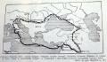

|
 | Valószínûleg kevés olyan
iskolázott magyar ember van, aki ne hallotta volna Kõrösi Csoma Sándor nevét.
Híres székely utazónk, nyelvtudósunk, a tibetológia atyja messzire vitte a
magyarok hírét. Sokan talán még azt is fel tudnák idézni történelmi
tanulmányaikból, ki volt Julianus barát. Õ volt az, aki elindult felkutatni
a baskir-magyarokat. Bejárta a Kaukázust, a kirgiz pusztaságokat, az Urál és a
Volga folyók vidékeit. Azonban a majd fél évezreddel korábban élt Johannus
Ungarus neve valószínûleg kevés olvasónk számára jelent többet puszta
fordításánál: Magyari János. Vajon milyen fontos utazás köthetõ ehhez a
névhez? Jómagam is csak azért tudok erre a kérdésre válaszolni, mert puszta véletlenségbõl hozzám került egy régi könyv, melynek szerzõje utánajárt, és lejegyezte ezt a fontos és érdekes történetet. Bendefy László: A Magyarság és
Középkelet (1945) megkopott borítója A Vatikáni
Levéltárban 1942 tavaszán Bendefy László történészünk egy kéziratú kártyakódex
lapjain IV. Sándor pápa levelének másolatára bukkant, amelyet Hulagu mongol
kánhoz intézett a Vatikán. Ebben van szó Johannes Ungarusról, aki 1261-ben
Hulagu követségét vezette a pápa elé, majd annak írásbeli válaszával visszatért
a nagy mongol hódító táborába. Hulagu 1253-tól 1258-ig tartó hadjáratában
elfoglalta az asszaszinoktól Alamut erõsségét, majd bevette Bagdadot, ezzel
alapította meg az ilkán birodalmat. (Az "ilkán" szó itt független fejedelmet
jelent.) Hulagu anyja nesztoriánus keresztény volt, és férjével együtt részt
vett a hadjáratban. Éppen egy Egyiptom elleni támadás elõkészítésén dolgoztak,
amelynek során az egyesült nyugati keresztény hadaknak kellett volna támogatniuk a
szentföldi területek elfoglalásában az mongol kánt, ám õk Damaszkusz ostromáig
sem érkeztek meg. Hulagu ezért mongol elõkelõségeibõl sebtében követséget
menesztett a pápához, hogy közvetlenül neki tárja fel szándékait. A követség élére
egy magyar embert állított: Johannus Ungarust. Johannus neve mellett
egyszer sem szerepel a frater szó, tehát
valószínûleg polgári személy volt. Ez arra utal, hogy az 1241-42-es nagy tatárjárás
alkalmával került mongol fogságba. Utazása idején (1261-ben) még
javakorabeli férfinak kellett lennie, tehát 20-25 éves korában hurcolhatták el,
ám nemesi származásra és rangra utal, hogy a mongolok ilyen tisztelettel
viseltettek iránta, hogy követségük élére állították. Mivel Hulagu levelét nem
õrizte meg írásos emlék, feltételezhetõ az is, hogy a küldöttek szóban
terjesztették elõ Hulagu üzenetét: a kán készséggel keresztény hitre tér
egész népével együtt, elismeri a pápai fennhatóságot. Cserébe azt kérte, hogy a
pápa a lehetõ leggyorsabban készítse fel a nyugati seregeket a mohamedánok
elleni küzdelemre. Válaszlevelében a pápa megemlíti, hogy mivel Johannus
levelet nem adott át, így nem lát biztosítékot a kán részérõl, ezért arra
utasítja, elõször a jeruzsálemi pátriárkával tárgyaljon, mert õ képes lesz
tájékozódni és bizonyosságot nyerni Hulagu valódi szándékai felõl. Amint megkapja
Jeruzsálembõl a levelet, azt már biztosítéknak veszi, és késszé válik a sereg
elindítására. (A pápai levél magyar fordításának szkennelésére és
beillesztésére várnotok kell egy kicsit. Érdemes, mert bõvelkedik az olyan
fordulatokban, mint például: "Valahányszor csak szabad a
kezed, minél buzgóbban munkálkodj üdvösséged érdekében! És ne mellõzd, hogy
minél behatóbban és körültekintõbben elmélkedj a szaracénok leigázása
felõl...") Johannus Ungarus útjának feltételezett
térképe Kérdés, hogy valóban
hiteles forrással van-e dolgunk. Az igazságtartalma bizonyosan nagy. Hulagu nem
volt keresztény, ám az örmény és grúz keresztény seregek valóban
segítségére voltak az ilkán birodalom hatalmának megszilárdításában, ezért a
keresztényeket azonnal védelmébe fogadta. 1260 szeptember 3-án egy
szerencsétlen kimenetelû ütközet után a kánnak szembe kellett néznie a ténnyel,
hogy nem legyõzhetetlen. Ez sarkallhatta a nyugattal való közvetlen
kapcsolatfelvételre. Egy Lemmens nevû történész munkájában (1929) is megtaláljuk annak
nyomát, hogy egy bizonyos Johannes Orientalis (Keleti János) Hulagu
nevében, írások felmutatása nélkül érkezett követségbe a pápához, aki õt
azonban "esetleg közönséges csalónak tartja". Igaz, Lemmens nem jelöli meg forrását,
ám az eltérõ név használata alapján hihetünk abban, hogy két forrásban is
fellelték Johannus létét, tehát az útja legalábbis lehetséges történeti
esemény.
Ha Johannus Ungarus valóban létezett, és valóban követségbe
küldték a pápához, akkor ennek az útnak az eredménye lett, hogy a különféle
orientális keresztény elöljárók maguk közé engedték a katolikus hittérítõket
Perzsiában, Szíriában, és a Közel-Kelet többi, Jézus-hitûek által lakott
területein.
Bendefy László történész az eredeti levelet sosem
találta meg, s két ismert másolata közül is csupán az egyiket olvashatta,
ugyanis a másik példány a háborús állapotok miatt egy óvóhelyen lapult, ehhez
értelemszerûen nem fért hozzá. Szerencséjére egy másik történész még idõben
feldolgozta a másik másolatot is, így az õ munkái alapján elvégezhette azzal
való összehasonlítását. Eredményei azt mutatták, hogy mindkét levél egy
eredeti forrás másolata kell, hogy legyen.
Tehát a kevés, ám lényeges
bizonyítékok alapján kimondhatjuk, hogy Johannus Ungarus valóban élõ személy
volt, aki 1261-ben Hulagu ilkán követségének élén megjelent a római udvarban, a
kezébe adott választ pedig közvetítette a kánnak, és ennek az
üzenetváltásnak köszönhetõen elkezdõdhetett a keletiek katolizálása. Akár
örülünk ennek a folyamatnak, akár nem, Bendefynek hála, gazdagabbak lettünk
egy nagynevû magyarral. Remélhetõleg az itt leírtakat azóta sem cáfolta
meg senki.
Felhasznált irodalom:
Bendefy
László: A magyarság és Középkelet (1945, Aquincum, Budapest)
| | vissza a fõoldalra |  |
| 1 2 | |  | | | | | | | | | | | | | | | | | | | | 1 2 |  |
|


túraszervezõ
túra-rss
mi ez?

legjobbak
legolvasottabbak
tartalomjegyzék
rss feed

AboryM
Caesar
Count Grishnackh
cscsabi
eürdüngh
Feki
GyalogKakukk
Ishukone
Kadzseszka
LACI1993
Mini
Muska
Rommel
Segi
Takezó
tommylee
vikcee
|